One search, full depth
Search frequency, station, language, country, or code across the complete on-device directory.
Use SWAtlas alongside your radio to explore shortwave broadcasts and quickly find World Airband and World FM frequencies, with nearby airports and relevant country data brought to the top.
SWAtlas is a companion app and does not receive radio signals by itself. A shortwave receiver or another audio source is required for live decoding, recording, and transcription.
World Airband & World FM are reference tools. With location access, World Airband lists nearby airports first, while World FM prioritizes stations from your current country—making the frequency you need easier to find.
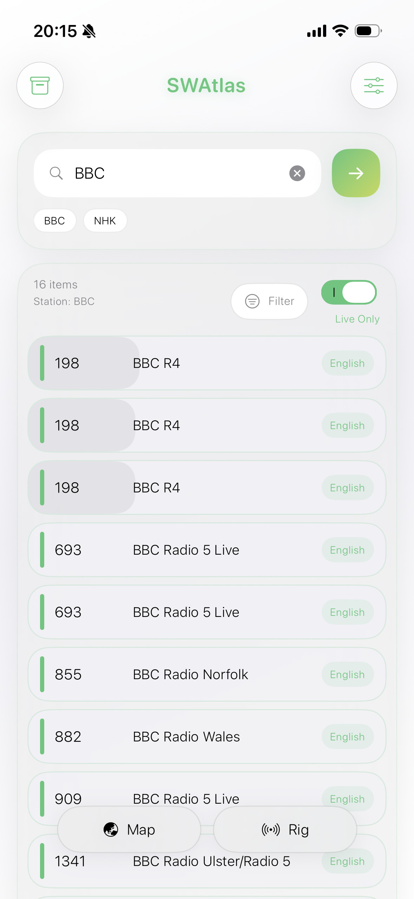
Built on respected shortwave datasets and expanded with World Airband and World FM reference directories, arranged to surface the most locally relevant frequency information first.
Search frequency, station, language, country, or code across the complete on-device directory.
Download the database once and keep exploring schedules wherever listening takes you.
When location data is available, see an approximate distance between you and the transmitter.
World Airband uses your location to list nearby airports first, helping you reach local tower, approach, ground, and information frequencies faster.
World FM prioritizes frequency references for your current country, with station and city information where available.
Shortwave databases use compact language codes. SWAtlas turns a code such as JPN into Japanese, so you can understand the broadcast language immediately while the original code remains available for searching and filtering.
Broadcast schedules should feel immediate, wherever you are. SWAtlas translates UTC, shows live progress, and brings you back at exactly the right time.
Set an alert from any broadcast detail and return when the station comes on air.

Open the Rig screen to check NOAA Space Weather, receive Radiofax images, decode Morse and RTTY, transcribe and translate spoken broadcasts on device, or record and enhance radio audio while keeping the original.
Radiofax helps turn HF fax audio into readable image output, making it easier to capture weather maps, marine charts, and visual shortwave broadcasts directly from your radio setup. Smart sync automatically detects the incoming LPM and keeps the image aligned as it is received.


The Morse decoder listens for CW tone patterns and translates them into readable text, helping operators follow call signs, numbers, symbols, and familiar shortwave exchanges with less friction. It automatically recognizes WPM, learns the rhythm of the signal, and applies the speed as it decodes.
The RTTY decoder listens for the alternating mark and space tones used by radio teletype signals and converts them into readable characters as they arrive. Smart tuning helps identify the two tones and their shift, while live baud rate, polarity, and confidence readouts make it easier to understand the signal before decoding.

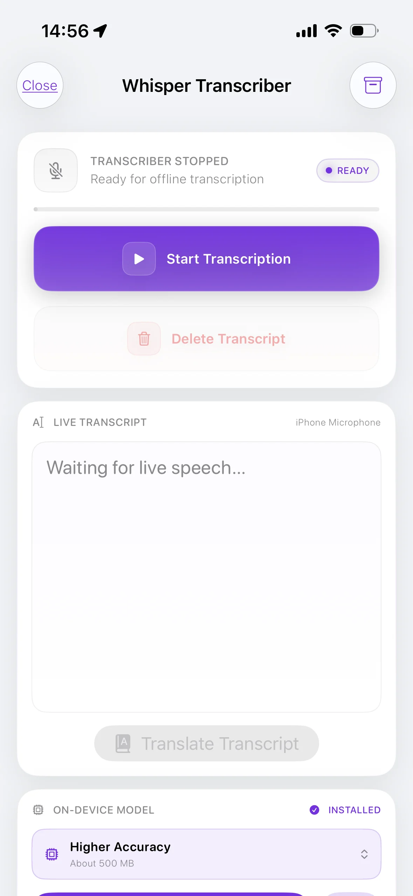
While the other Signal Tools decode specialist radio modes, Whisper helps you explore spoken shortwave broadcasts. Download the transcription and translation models once, turn speech into text, translate it into a language you choose, and archive both versions—all offline.
Record radio audio, reduce steady noise, and keep both the enhanced and original recordings. Finished recordings can be sent to Whisper Transcriber for on-device transcription and translation.
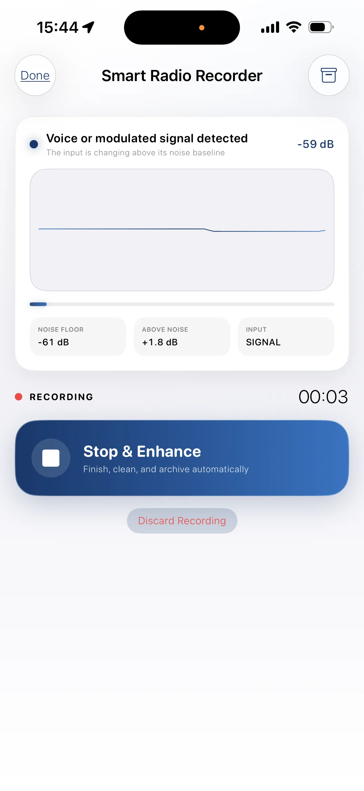
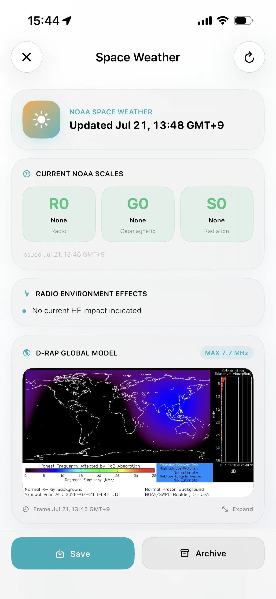
Review NOAA radio conditions, R-scale blackout status, geomagnetic forecasts, solar flux, X-ray activity, and the latest D-RAP map. The most recently downloaded report remains available offline.
Every screen is built to shorten the distance between curiosity and listening—from the first search to the station map.
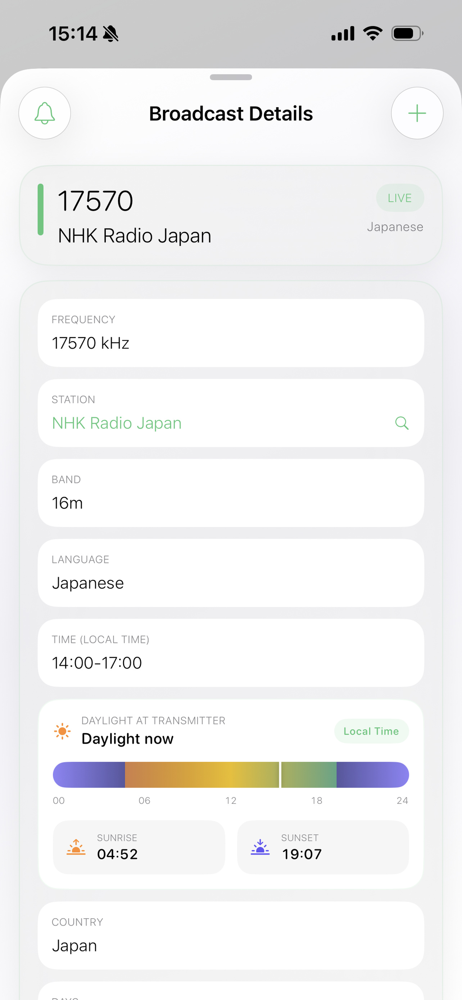
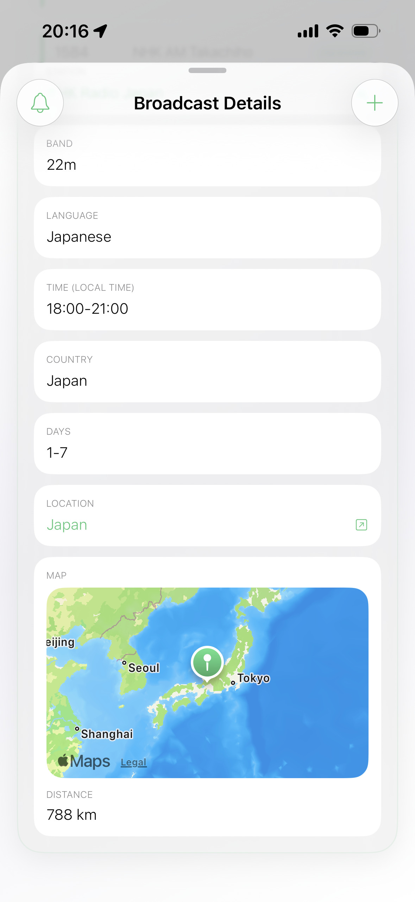
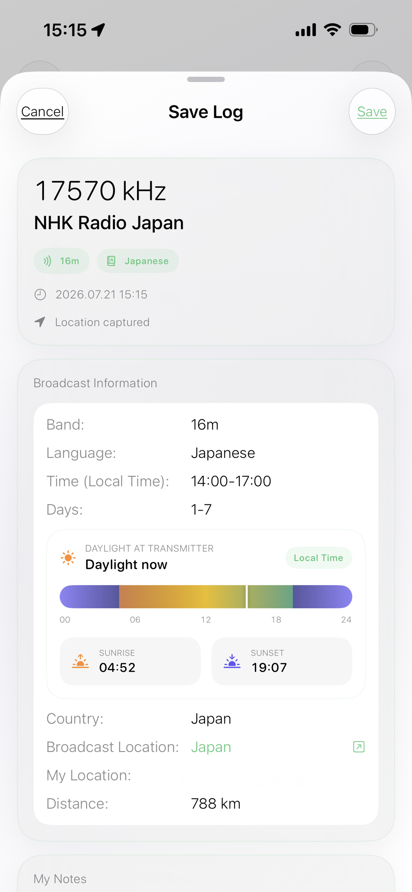
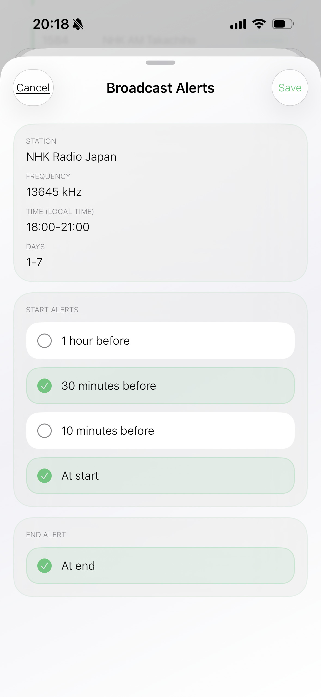

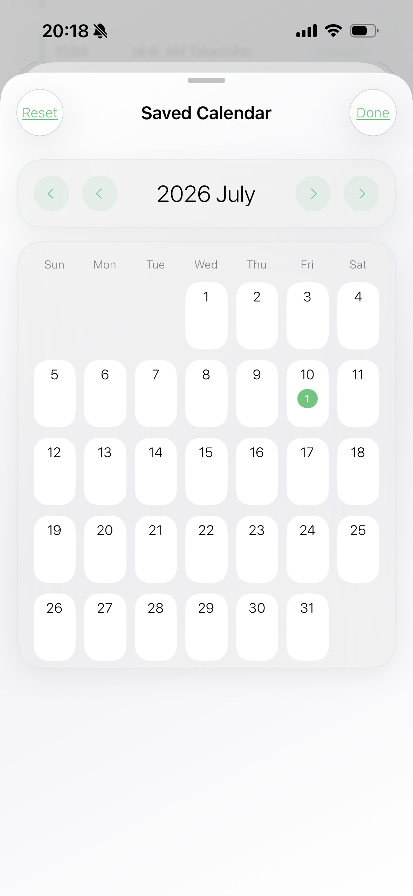
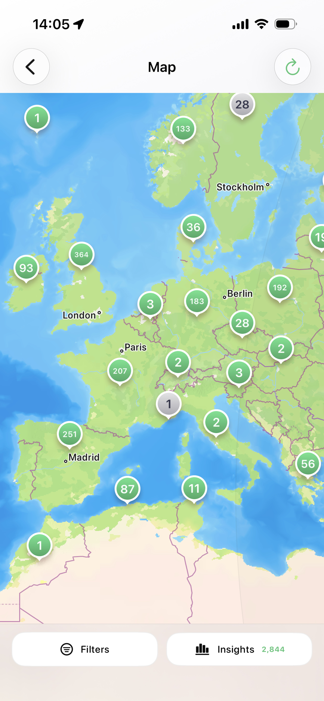
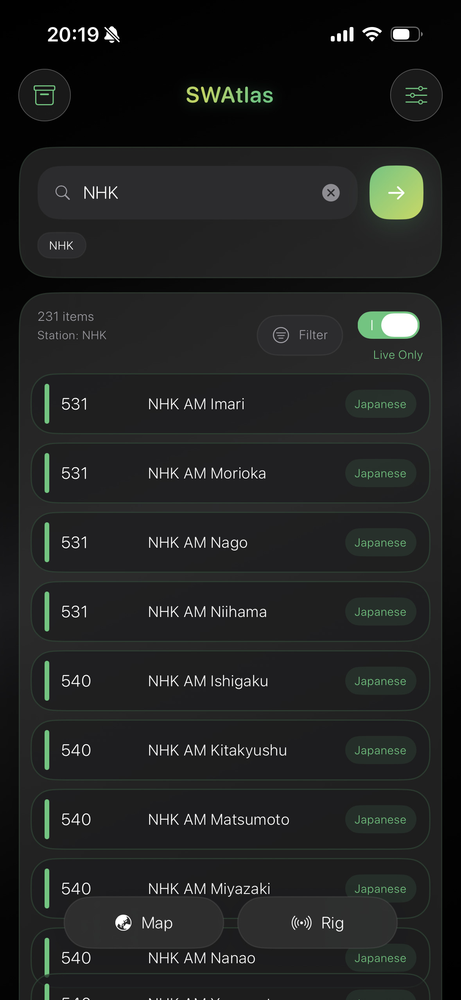
Search the on-device directory by frequency, station, language, country, or code.
See what is on air, follow live progress, and return when a saved broadcast begins.
Narrow a downloaded schedule by language, country, band, day, status, or ITU code.
Explore transmitter locations, approximate distance, and local daylight context.
Keep ratings and notes, then review reception history by station, country, date, or distance.
Manage radio setups and recover equipment references found only in archived logs.
Check Space Weather, decode Radiofax, Morse, and RTTY, transcribe speech, or record cleaner audio.
Choose worldwide broadcasts, receive an alert, and prepare timed Radiofax reception.
Back up Saved Logs, settings, alerts, rigs, and Signal Tool archives in a .swatlasbackup package.
Browse airport communication frequencies with nearby airports placed first when location access is available.
Look up FM frequencies, stations, and cities worldwide, with your current country prioritized for faster discovery.
One beautifully focused atlas for a world of radio.
Download on the App Store